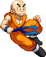
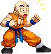

Wall Jump
When jumping straight up or backwards against a wall, press up-forward to wall-kick off it. You can jump off the wall forward and back.
As an added bonus, doing a wall-jump resets the air dash limiter (once) and the Rocket Man limiter.



Backdash
Krillin has an infinite backdash (but only outside of Confidence Mode) - he's getting the frick outta there!

Back Hop
A command hop which mimics Goku bros backdash, similarly you can perform aerial attacks during it.

Air Dash Backwards
Krillin's aerial Dash Backwards is unique in that he is one of the few characters that can do it after jumping forward.


Duck 'n Cover
Take cover! This move puts Krillin belly-first onto the ground, giving him a low profile
used to dodge (most) projectiles. You can remain in this state as long as you want (until you get hit) by holding Down.
Pressing down-forward makes Krillin roll out forward, while down-backwards makes him roll backwards.


Triple Turtle Combination
Quick strike with the knee during a forward hop, then an straight aerial kick,
and ending with either a Headbutt or Bolley Kick.
Tough Guy
Krillin's standing Strong Punch delivers a pretty solid
body check. Pressing the button again throws out a heavy straight punch.
Uppercut
Main launcher tool. After hitting the opponent with it, press Up
to pursue them and set yourself up to perform an aircombo.

Rocketman
While in the air, Krillin fires a multi-hitting beam straight down, launching himself back up a bit.
The button strength determines how high he launches himself up.
Has a Fake version by pressing Down+Start in the air. Has an EX version which launches him up faster and higher.

Dash Kick
Wa-chow! Bada-bing, bada-boom. When this kick hits, it recoils Krillin back a bit, during which you can throw out another attack.

Tricky Blast
Krillin's Ki Blasts arc upwards until they exit the screen vertically.
After a little while, they come falling back straight down. The button strength determines the distance it falls back down.
The SP version doesn't arc quite as heavy and actually travels more forwards.
The EX version fires a larger, twice-hitting energy ball. That too has three different versions which fall back down on different distances.
(pressing QCF+ either LP+MP, LP+SP or MP+SP). This EX version can't be chained like the regular version can though.
Also has a Fake version by pressing QCF+Start.
Also has a Fake version by pressing QCF+Start.

Jet Kamehameha
By firing a short Kamehameha burst behind him, Krillin propels himself forward to ram into the opponent.
The version done from the ground launches him diagonally up and forward, while he launches himself diagonally down and forward with the aerial version.
Upon hitting the opponent, Krillin recoils back from the impact. The EX version hits 3 times and doesn't make Krillin recoil.
Also has a Fake version by pressing QCB+Start either while on the ground or in the air.
The LP version (for both the grounded and aerial version) while in Confidence Mode launches p2 on hit.


Turtle Flip
Krillin shoots through the air at varying arcs;
short distance with Light Kick and long distance with Strong Kick. Medium is inbetween.
While flipping he is able to perform a couple of different follow-up moves. Punch performs a double-hammer punch that knocks down.
Kick performs a high kick that knocks the enemy into the air.
Light Punch + Light Kick performs a grab which only works if Krillin is very near to the opponent. They can be in the air or standing, but you can't grab a crouching opponent. The EX version of the flip goes faster by default and has projectile immunity. You can also press any direction during the EX flip to steer Krillin into that direction. Besides that you can change its forward / backwards velocity with Forward and Back respectively and you can cancel all air okay EX Special and Super moves from it. As excpected, this move also has a Fake variant with HCF+Start.
Kick performs a high kick that knocks the enemy into the air.
Light Punch + Light Kick performs a grab which only works if Krillin is very near to the opponent. They can be in the air or standing, but you can't grab a crouching opponent. The EX version of the flip goes faster by default and has projectile immunity. You can also press any direction during the EX flip to steer Krillin into that direction. Besides that you can change its forward / backwards velocity with Forward and Back respectively and you can cancel all air okay EX Special and Super moves from it. As excpected, this move also has a Fake variant with HCF+Start.

Wild Sense
The Wild Sense is a 'stance' that enables you to quickly duck and cover by pressing any Kick button during it.
It also acts as a counter; when Krillin is hit by a physical attack during the scaredy pose, he'll automatically perform the duck and cover.
The EX version now houses the different attacks you can perform out of the stance.
-LK makes Krillin do a back handspring, his legs kicking anyone close enough to him (you're gonna want to hit an opponent that's advancing towards you with it).
-MK makes Krillin leap up and forward, then shooting a Ki Blast diagonally down-forward.
-SK sees Krillin performing a Rocketman, propelling himself vertically off the ground.
-LK makes Krillin do a back handspring, his legs kicking anyone close enough to him (you're gonna want to hit an opponent that's advancing towards you with it).
-MK makes Krillin leap up and forward, then shooting a Ki Blast diagonally down-forward.
-SK sees Krillin performing a Rocketman, propelling himself vertically off the ground.
Mirage
This move makes you go 'wow!' as Krilllin splits into a row of 3 instances of himself!
However, there is really only one instance that's able to deal and receive damage. Which one that is, is up to you.
Activating Mirage with LK and the Krillin in the back is the real one. With MK, the one in the middle. With SK, the one in the front.
The EX version of this move is now the Solar Flare, detailed below.

Solar Flare
This classic attack originally designed by Tien is used to blind the enemy, temporarily stunning them
to charge up for a powerful attack or assault. The button strength used determines the length that the enemy remains stunned.
Be ware that you cannot hit them when they are stunned (by the Solar Flare)! But the different stun times can be used to confuse the enemy.
Has a Fake variant by pressing RDP+Start.